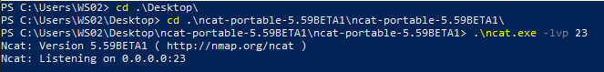
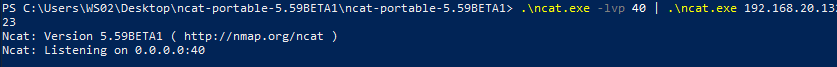
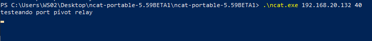
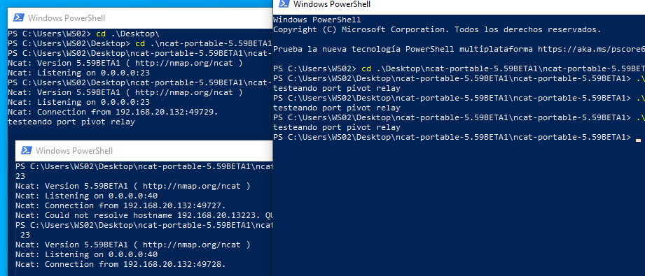
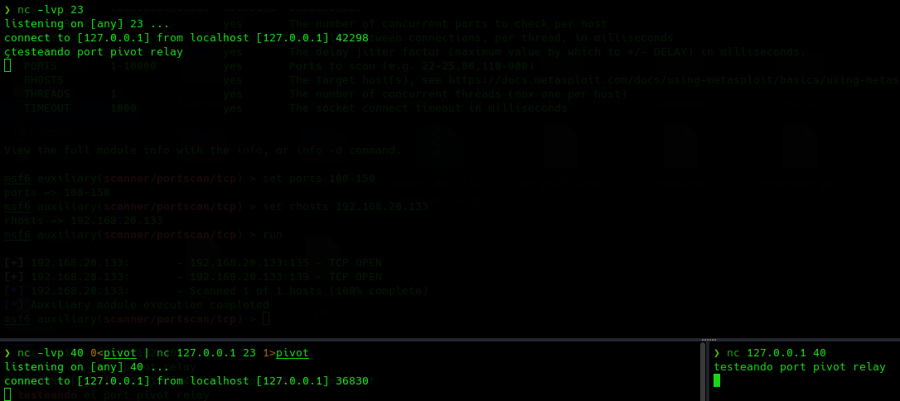

Fundamentalmente a entender en esta técnica es que en las anteriores hemos necesitado comprometer una máquina dentro de la infraestructura para poder crear el meterpreter y realizar las técnicas.
Se puede realizar este pivoting sin necesidad de establecer una conexión reversa.
El concepto comienza con la posibilidad de exponer un servicio, por ejemplo en el puerto 23 protegido por un firewall, mediante el uso de Netcat a otro puerto que si sea accesible de forma externa como el 135.
Para probar esto vamos a la máquina windows con Netcat para simular que está ofreciendo un servicio en el puerto 23.

Suponemos que el firewall permite conexiones en el puerto 40 por lo que le indicamos que todos los paquetes que reciba por el puerto 40 los redirija al 23.
Es importante tener en cuenta que el puerto no puede estar ocupado con otro servicio.
.\ncat.exe -lvp 40 | .\ncat.exe 192.168.20.13223

Ahora desde kali o cualquier máquina externa como el puerto 40 si tiene conexión externa:


Desde Linux también se puede realizar y además podemos crear un archivo fifo para evitar tener que cerrar la conexión para que lleguen los datos.
nc -lvp 23
mknod pivot p
nc -lvp 40 0<pivot | nc 127.0.0.1 23 1>pivot
nc 127.0.0.1 40
